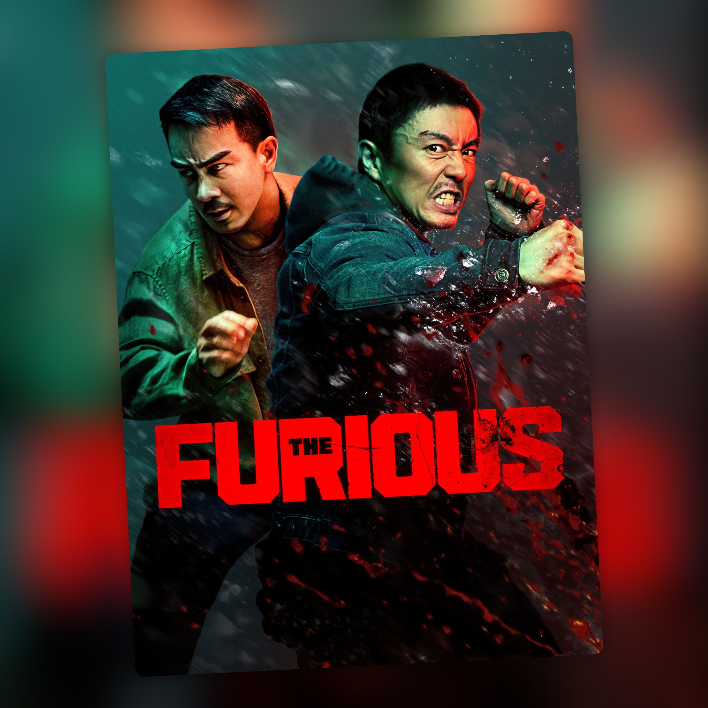

The Furious (2025)
Ostias bien coreografiadas para fans de The Raid

The Furious me ha encantado. A los fans de The Raid y The Raid 2, y en general a los que disfrutan de las películas de ostias y de las coreografías de lucha increíbles, les va a volver locos.
Y tiene sentido que sea así, porque parte del reparto viene directamente de ese universo. Joe Taslim salía en la primera The Raid y Yayan Ruhian en las dos, y aquí están metidos hasta el cuello. A ellos se suman Jeeja Yanin, Brian Le y Joey Iwanaga, que vienen del cine de acción tailandés, de los equipos de especialistas de Hollywood y del cine japonés. Kenji Tanigaki, el director, viene del mundo de la coreografía de acción y se nota en la forma de rodar las escenas. Los combates duran lo suficiente para disfrutar de lo que hacen los actores y no están llenos de cortes que te impidan seguir lo que está pasando.
Cada personaje tiene su propia manera de pelear. Xie Miao viene del wushu, Joe Taslim del judo y Yayan Ruhian del pencak silat, y la película aprovecha esas diferencias para que los enfrentamientos tengan variedad. No se trata simplemente de encadenar golpes y patadas: hay estilos distintos, movimientos muy físicos y una buena cantidad de golpes que parecen doler hasta al otro lado de la pantalla.
Xie Miao es Wang Wei, un padre al que le secuestran a su hija y que decide ir a buscarla por su cuenta. El personaje es mudo, así que buena parte de lo que sabemos de él lo vemos en sus acciones. Su forma de expresar la rabia y la desesperación pasa por los gestos y, sobre todo, por lo que hace cuando se encuentra con quienes le han arrebatado a su hija.
La historia es la típica excusa de venganza: una red de tráfico de menores secuestra a su hija y la policía, que además está metida en el ajo, no va a hacer nada por ayudarle. Por el camino se cruza con Navin, un periodista que está buscando a su propia mujer desaparecida, y los dos acaban uniendo fuerzas contra la misma organización. No hay ninguna sorpresa en el planteamiento, pero tampoco hace falta. La película sabe perfectamente a lo que viene y no pierde demasiado tiempo en otras cosas.
Y luego empieza el desfile de personajes. Joe Taslim hace de Navin y pelea como el judoca que es: mientras Wang Wei golpea y mantiene la distancia, él busca agarrar al rival y tirarlo al suelo. Su mujer, Matia (Jeeja Yanin), también es periodista, estaba investigando la organización criminal y su desaparición es la que pone en marcha la búsqueda de Navin. Sale poco, pero la película le reserva una pelea nada más empezar. Al otro lado están los malos. Joey Iwanaga es Paklung, el cabecilla de la red, que viene del kárate y pelea sobre todo con las piernas. Yayan Ruhian interpreta a Tak, su guardaespaldas y hombre de confianza, que va a todas partes con un arco. Tak es uno de esos personajes que parece disfrutar demasiado de lo que hace, y Ruhian vuelve a demostrar que tiene una presencia tremenda en pantalla. Ho, interpretado por Brian Le, es un tipo enorme que se mueve con una agilidad que no esperas al verlo, y es uno de los personajes que más llaman la atención cada vez que aparece en una pelea. Ninguno de los cinco que llegan al final pelea como los demás.
El combate final es la guinda y merece que nos detengamos un momento. Los cinco acaban coincidiendo en una comisaría: Wang Wei y Navin por un lado, Paklung y Tak por otro, y Ho, que entra a por todos. Cinco luchadores y tres bandos. La pelea va cambiando de forma constantemente: empieza con enfrentamientos entre dos personajes, pasa a combates por parejas y llega a situaciones en las que dos enemigos tienen que colaborar porque hay alguien todavía más peligroso en la sala. Las alianzas duran lo que duran. Tanigaki lo explica más o menos así: «Yo te pego a ti, también te pego a ti, y a ratos tú y yo le pegamos a él». Cuando parece que uno tiene la situación controlada, la entrada de otro cambia por completo el enfrentamiento.
Eso es lo que la hace tan complicada. En un uno contra uno cada actor está pendiente de su rival; aquí tiene que estar pendiente de otros cuatro, y Joe Taslim ha dicho que es la pelea más difícil que ha hecho nunca. Cada pareja plantea un tipo de pelea distinto, porque no es lo mismo tener delante a uno que te quiere agarrar, a uno que te tira patadas o a un tipo del tamaño de Ho. Se rodó en tomas largas y sin dobles, durante dieciocho noches. Tiene algo de baile caótico: parece un desorden, pero en todo momento entiendes quién se enfrenta a quién y por qué acaba de cambiar de rival, y la pelea no pierde ritmo. Con todos estos especialistas compartiendo escena, la película suelta el freno del todo.
Es una película pensada para verla con público, gritando con cada golpe. Si te van The Raid, Ip Man o ese tipo de cine de acción físico y sin trampas, esta es de las tuyas.
Ficha técnica
- Título original: 火遮眼 (Fo Ze Ngaan / The Furious)
- Dirección: Kenji Tanigaki
- Guion: Mak Tin-shu, Lei Zhilong, Shum Kwan-sin y Frank Hui
- Reparto principal: Xie Miao, Joe Taslim, Yang Enyou, Jeeja Yanin, Yayan Ruhian, Brian Le y Joey Iwanaga
- Año: 2025
- Duración: 113 min
- Dónde verla: Movistar Plus+